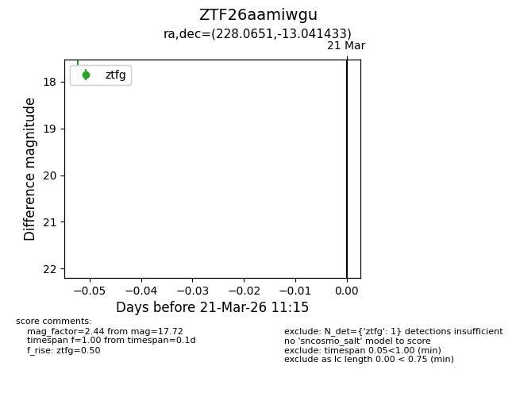
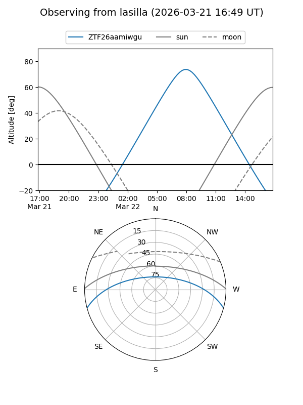
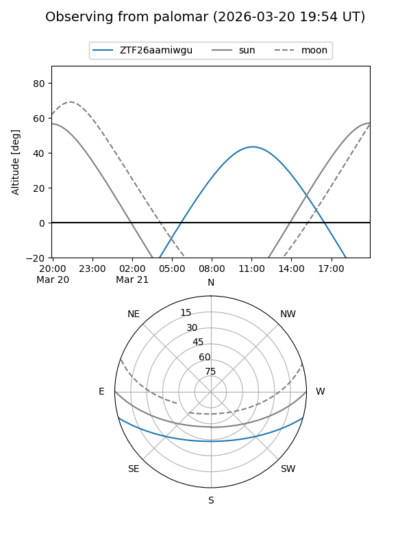

ZTF26aamiwgu
Target ZTF26aamiwgu at 2026-03-21 11:16
Aliases and brokers:
FINK: link
Lasair: link
ALeRCE: link
alt names
ZTF26aamiwgu (ztf,fink_ztf)
Coordinates:
equatorial (ra, dec) = 228.0651,-13.04143
equatorial (HMS+DMS) = 15:12:15.62,-13:02:29.16
galactic (l, b) = (347.8221,+37.26822)
Flags:
Photometry:
last ztfg=17.72
1 ztfg detections
Lightcurve

Visibility


Additional plots